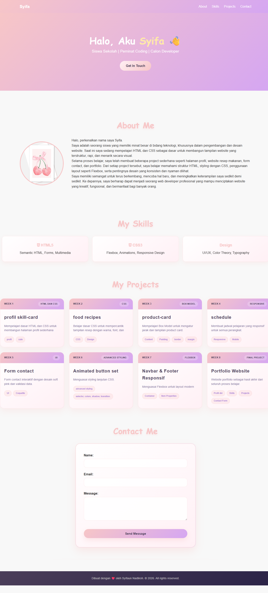

Membuat landing page sederhana menggunakan HTML & CSS dengan konsep clean dan minimalis.

Pada project ini saya belajar membuat struktur layout menggunakan Flexbox, mengatur warna agar konsisten, serta menerapkan desain minimalis yang clean dan rapi. Project ini membantu saya memahami dasar pembuatan landing page dan pengaturan tampilan yang responsif.